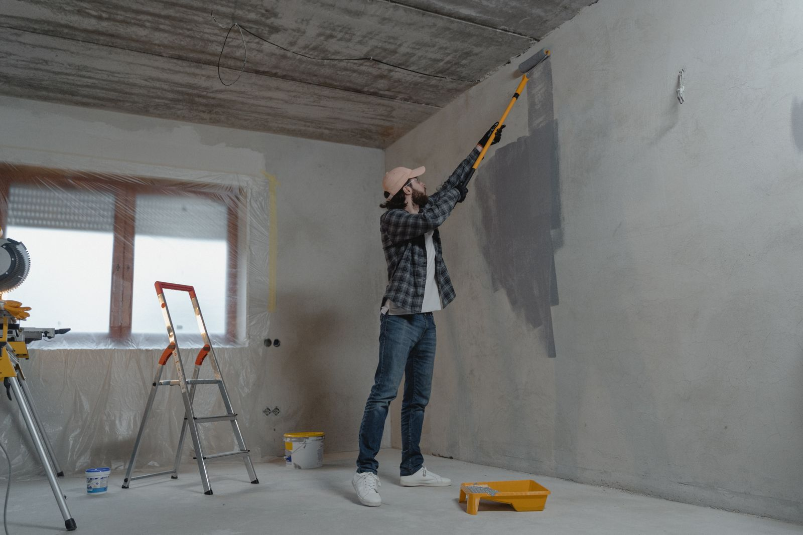

Koordination auf Ungarisch und Deutsch mit Eigentümern, Verwaltern und lokalen Ansprechpartnern – klar und leicht nachvollziehbar.
Immobilieninstandhaltung in Sopron
Immobilien-Instandhaltung in ganz Sopron – von Wohnungen in der Altstadt bis zu Villen in den Lővér-Hügeln – die Sie von überall aus verfolgen können.
Ein verlässlicher Wartungspartner für Eigentümer im Ausland, Wohnungsinvestoren, Airbnb-Gastgeber mit Altstadt-Vermietungen, Büros und Repräsentationsimmobilien in Sopron. Kleinere Reparaturen, Malerarbeiten, Trockenbau, Gartenpflege, Fotoupdates und ungarisch-deutsche Abstimmung in einem klaren Arbeitsablauf.

Warum es funktioniertFotos, eine klare Aufgabenliste und vereinbarte nächste Schritte.
Fotoaktualisierungen können den Ausgangszustand, wichtige Arbeitsschritte und die endgültige Übergabe zeigen.
Zugeschnitten auf die praktischen Bedürfnisse von Altstadtwohnungen, Villen in den Lővér-Hügeln, Büros und Häusern mit Innenhof in ganz Sopron.
Die Bilder auf dieser Website sind illustrative Beispiele für typische Arbeitsabläufe und erwartbare Ergebnisse.
01
Was kann die Immobilieninstandhaltung umfassen?
Gute Instandhaltung beginnt mit sichtbaren Aufgaben, klaren Entscheidungen und Arbeiten, die kein ständiges Verfolgen erfordern. Der Umfang wird rund um die Immobilie, den aktuellen Zustand, die Zufahrt und den Zeitpunkt vereinbart.
Regelmäßige Zustandskontrollen
Sichtbare Mängel, Wasserflecken, Wandschäden, Probleme im Innenhof und Bedenken hinsichtlich gemeinsam genutzter Bereiche können überprüft werden. Besonders nützlich, wenn der Eigentümer nicht in Sopron ist, aber dennoch ein klares Bild der Immobilie benötigt.
Kleinreparaturen und vorbeugende Instandhaltung
Einrichtungsarbeiten, kleine Installationsarbeiten, Reparaturen und praktische Tätigkeiten vor einer Renovierung, nach einem Mieterauszug oder zwischen Gastaufenthalten. Ziel ist es, beherrschbare Probleme zu lösen, bevor sie zu größeren Problemen werden.
Malerarbeiten und Wandausbesserungen
Wandflecken, kleine Schäden, Ausbesserungen, Ausbesserungsarbeiten oder komplette Raumanstriche vor der Vermietung, dem Verkauf, dem Fotografieren oder der Übergabe.
Trockenbau und praktische Reparaturen
Trockenbauschäden, kleine Öffnungen, Oberflächenmängel und Nachmieter-Reparaturen werden über eine praktische, transparente Aufgabenliste abgewickelt.
Garten-, Hof- und Außenpflege
Mähen, Heckenschneiden, Strauchschneiden, Grünabfallorganisation und sauberere Außenpräsentation für Soproner Wohnhäuser, Büros und Privathäuser.
Foto-Updates und Berichterstattung
In wichtigen Phasen können Fotos gesendet werden, sodass der Eigentümer, Manager oder Bürokontakt das Geschehen vor Ort auch aus der Ferne verfolgen kann.
02
Wen wir unterstützen und wann es hilft
Dieser Service richtet sich an Kunden, die eine organisierte, fotodokumentierte und praktische Umzugspflege in Sopron benötigen. Die Aufgabe kann eine schnelle Wandreparatur, eine Ausbesserung nach dem Gastbesuch, eine Auffrischung im Büro oder saisonale Arbeiten im Freien sein.
- Eigentümer im AuslandFür eine Koordination aus der Ferne, Foto-Updates, abgestimmten Zugang und nachvollziehbare Entscheidungspunkte — viele Immobilieneigentümer in Sopron leben gleich auf der anderen Seite der Grenze in Österreich, nah genug für einen Besuch, aber zu weit für die täglichen Aufgaben vor Ort.
- Airbnb-Gastgeber und WohnungsinvestorenFür den Gästewechsel, den Mieterauszug, kleine Mängel, Wandspuren und die Präsentation vor einer Besichtigung oder einem Fototermin — besonders relevant für Altstadtwohnungen mit regelmäßigem Gästestrom im Rahmen des Kulturtourismus.
- Büros, Gewerbeimmobilien und grenzüberschreitende UnternehmenWenn sichtbare Probleme vor einem Besuch, einer Übergabe oder dem Normalbetrieb schnell und diskret behoben werden müssen.
- Private Haus- und WohnungseigentümerEinfamilienhäuser, Eigentumswohnungen, Kleinreparaturen, Malerarbeiten, Trockenbaureparaturen, Gartenpflege, saisonale Wartung und Vorbereitung vor dem Einzug oder Verkauf.


Dies sind anschauliche Beispiele, die zeigen, in welchen Situationen Wartungsunterstützung sinnvoll ist; sie werden nicht als abgeschlossene Projektreferenzen dargestellt.
03
Präventive Instandhaltung und Wohnungsinspektionen
In einer Wohnung in der Belváros oder einem älteren Gebäude in Sopron bedeutet Instandhaltung nicht nur, auf offensichtliche Schäden zu reagieren. Regelmäßige Kontrollen helfen, Wasserflecken, Wandschäden, lose Ausstattung und Anzeichen von Feuchtigkeit frühzeitig zu erkennen, sodass kleine Probleme dokumentiert und behoben werden, bevor sie bei einem Mieterwechsel oder der Ankunft von Gästen dringlich werden.
Wohnungsinspektionen für abwesende Eigentümer
Für im Ausland lebende Eigentümer kann eine gezielte Inspektion helfen, Wasserflecken, Wandschäden, mögliche Schimmelstellen, lockere Beschläge oder Mängel zu erkennen, die nach dem Auszug eines Gastes oder Mieters zurückbleiben.
Vorbeugende Reparaturen, bevor Probleme größer werden
Kleine Risse, lockere Befestigungen, beschädigte Ecken, Probleme mit Türen oder Griffen sowie kleinere Oberflächenschäden lassen sich oft leichter beheben, bevor der nächste Mieter, Gast oder Besichtigungstermin ansteht.
Instandhaltung vor dem Einzug des Mieters
Vor der Übergabe lohnt es sich, Wände, Schalter, Schlösser, Details im Badezimmer, Küchenoberflächen und sichtbare Abnutzung zu prüfen, damit der Einzug organisierter wirkt und weniger praktische Fragen offenbleiben.
Kontrollen nach dem Auszug des Mieters
Nach dem Auszug eines Mieters sind Wandspuren, kleine Schäden, Reinigungsbedarf sowie fehlende oder beschädigte Beschläge keine Seltenheit. Eine Instandhaltungsliste hilft dabei, dringende Punkte von Arbeiten zu trennen, die später eingeplant werden können.
Airbnb- und Kurzzeitvermietungs-Bereitschaft
Bei kurzfristigen Vermietungen kommt es auf den sichtbaren Zustand an. Wandreparaturen, kleine Handwerkerarbeiten, praktische Auffrischungen und die Koordination der Reinigung können vor der Ankunft des nächsten Gastes hilfreich sein.
Typische Probleme bei Wohnungen in Sopron
Ältere Gebäude im historischen Zentrum von Sopron zeigen häufig abgenutzten Putz, Risse, Spuren rund um Heizkörper, Feuchtigkeitsspuren oder Staub aus dem Innenhof. Solche Probleme sollten je nach tatsächlichem Zustand behandelt werden, nicht mit einer pauschalen Lösung.
04
Instandhaltungskoordination, Fotodokumentation und realistischer Leistungsumfang
Der eigentliche Wert guter Instandhaltung liegt in der Organisation. Für einen ausländischen Eigentümer, Airbnb-Gastgeber oder Büroansprechpartner reicht es nicht zu hören, dass gerade gearbeitet wird; sie müssen verstehen, worum es geht, was bereits erledigt ist und wofür eine gesonderte Entscheidung nötig ist.
Unterstützung für ausländische Immobilieneigentümer
Wenn Sie nicht in Sopron sind, können Aufgaben mit Fotos, Zugangsdetails und Freigabepunkten vorbereitet werden. Für eine umfassendere Koordination erläutert die Seite Immobilienverwaltung für ausländische Eigentümer den größeren Arbeitsablauf.
Ablauf bei dringenden Anfragen
Bei dringenden Anfragen wird zunächst das Risiko geklärt, ebenso Zugang, Fotos und Zeitrahmen. Nicht jeder Mangel lässt sich sofort beheben, aber der nächste sinnvolle Schritt kann rasch festgelegt werden.
Ablauf der Fotodokumentation
Fotos helfen, den Ausgangszustand, den Reparaturbedarf und das fertige Ergebnis zu dokumentieren. Das ist besonders hilfreich vor der Mieterübergabe, der Ankunft von Gästen oder bei Wohnungen, die aus der Ferne verwaltet werden.
Was enthalten ist
Die Instandhaltungsliste kann kleine Handwerkerarbeiten, Wandreparaturen, Maler- und Putzausbesserungen, Koordination der Reinigung, Garten- oder Innenhofpflege, Begehungen und Foto-Updates umfassen.
Was nicht automatisch enthalten ist
Wir versprechen keine baulichen, Gas-, Elektro-, rechtlichen oder vollständigen Vermietungsverwaltungsleistungen ohne vorherige Prüfung. Regulierte, fachspezifische Arbeiten oder verdeckte Mängel erfordern oft einen entsprechenden Fachbetrieb, eine Begutachtung oder eine vorherige Freigabe.
Verwandte Leistungen
Instandhaltung hängt häufig mit Gartenpflege, Airbnb-Immobilieninstandhaltung, Reinigung oder Auffrischungsarbeiten vor der Übergabe zusammen. So bleiben zusammenhängende Aufgaben in einer übersichtlichen Liste sichtbar.
05
So funktioniert der Ablauf
Die meisten Wartungsaufgaben können mit ein paar Fotos, einer kurzen Beschreibung und klaren Zugangsinformationen beginnen. Komplexere oder versteckte Probleme erfordern möglicherweise eine Beurteilung vor Ort.
Fotos und kurze Beschreibung
Senden Sie die Adresse oder die Gegend, sichtbare Probleme, den bevorzugten Zeitpunkt und wie der Zugang zur Immobilie arrangiert werden kann.
Aufgabenliste und nächster Schritt
Wir klären, was anhand von Fotos beurteilt werden kann, wo weitere Informationen erforderlich sind und wann ein Besuch vor Ort sinnvoll ist.
Organisierte Ausführung
Die Arbeit folgt der vereinbarten Aufgabenliste. Sollte während des Besuchs ein neuer Gegenstand auftauchen, wird dieser gesondert besprochen, bevor sich der Umfang ändert.
Foto-Update und Übergabe
Eine Fotozusammenfassung des fertigen Zustands, wichtige Details und mögliche weitere Schritte können auf Anfrage zugesandt werden.
06
Warum Sopron Property Services?
Bei Immobilien in Sopron ist die größte Herausforderung oft nicht die Größe des Auftrags, sondern der Zugang, die Koordination und die klare Entscheidungsfindung. Da helfen wir.
Klare Kommunikation
Aufgaben können klar auf Ungarisch oder Deutsch besprochen werden. Das ist besonders wertvoll, wenn Eigentümer, Verwalter und die Arbeiten vor Ort nicht am selben Ort stattfinden.
Strukturierter Ablauf
Kleinere Reparaturen, Malerarbeiten, Arbeiten im Freien und Vorarbeiten zur Übergabe werden in einer übersichtlichen, überschaubaren Aufgabenliste organisiert.
Fokus auf Sopron
Unterstützung, die auf die praktische Realität von Altstadtwohnungen, Villen in den Lővér-Hügeln, Häusern mit Innenhof, Büros und Mietobjekten in ganz Sopron abgestimmt ist.
07
FAQ zur Immobilieninstandhaltung
Praktische Antworten für Eigentümer, Verwalter, Airbnb-Gastgeber und Büroansprechpartner.
Arbeiten Sie mit Eigentümern im Ausland?
Ja. Arbeiten können aus der Ferne koordiniert werden, wenn Zugang, Entscheidungsbefugnis und lokaler Zugang klar sind. Auf Anfrage können Fotoaktualisierungen für wichtige Schritte gesendet werden.
Welche Arten von Immobilien pflegen Sie?
Wir können über Wohnungen, Privathäuser, Airbnb-Objekte, Büros, Gewerbeflächen und Repräsentationsräume in Sopron sprechen. Die Machbarkeit wird anhand von Lage, Umfang und Zeitplan bestätigt.
Können Sie eine Immobilie vor Beginn besichtigen?
Ja. Wenn sich der technische Umfang anhand von Fotos nicht nachvollziehen lässt, ist eine Begutachtung vor Ort meist der richtige nächste Schritt. Sichtbare Probleme, Zugriff und mögliche nächste Maßnahmen werden überprüft.
Kümmern Sie sich um kleine Reparaturen?
Ja. Viele Aufgaben sind klein, aber wichtig: Wandmarkierungen, Beschläge, kleinere Installationsarbeiten, Mängel im Trockenbau oder Ausbesserungen vor der Übergabe. Ziel ist es, die Immobilie sauberer, ordentlicher und benutzerfreundlicher zu machen.
Können Sie nach dem Gästewechsel bei Airbnb helfen?
Ja. Sollten nach einem Aufenthalt noch Mauerspuren, kleine Schäden, Outdoor-Aufgaben oder Präsentationsprobleme bestehen bleiben, lässt sich die Aufgabenliste oft anhand von Fotos erstellen. Kurze Fristen werden nach Kapazität und Umfang bestätigt.
Senden Sie Fotos der Arbeiten?
Ja, auf Anfrage. Fotos helfen Eigentümern und Managern, die Situation zu verstehen, auch wenn sie nicht in Sopron sind. Sie ersetzen keine Entscheidungen vor Ort, liefern aber praktische Updates.
Ist Kommunikation auf Deutsch möglich?
Ja. Leistungsumfang, wichtige Fragen und Übergabe können auf Ungarisch oder Deutsch besprochen werden. Das ist besonders hilfreich für ausländische Eigentümer, Büros und Repräsentationsobjekte.
Können Gärten und Innenhöfe gepflegt werden?
Ja. Soproner Gärten, Wohnungshöfe und kleinere Außenbereiche können besprochen werden. Dazu können Mähen, Heckenschneiden, Strauchschneiden und allgemeine Aufräumarbeiten im Freien gehören.
Wie kann ich ein Angebot anfragen?
Am einfachsten ist es, Fotos über WhatsApp zu senden – zusammen mit der Adresse oder dem Stadtteil in Sopron, dem gewünschten Zeitrahmen und einer kurzen Beschreibung. Von dort aus können wir klären, ob die Fotos ausreichen oder eine Besichtigung vor Ort nötig ist.
Übernehmen Sie dringende Arbeiten?
Dringende Aufgaben können anhand von Kapazität, Standort und Umfang überprüft werden. Geben Sie in der ersten Nachricht die Deadline und die wichtigsten Fotos an, damit die Machbarkeit realistisch eingeschätzt werden kann.
Was ist bei der Immobilien-Instandhaltung normalerweise enthalten?
Immobilien-Instandhaltung kann je nach Aufgabenliste Inspektionen, kleine Reparaturen, die Behebung von Wandmängeln, Malervorbereitung, Reinigungskoordination, Außenarbeiten und Foto-Updates umfassen. Der genaue Umfang sollte anhand von Fotos, Lage und Zeitplan geklärt werden.
Was gehört nicht automatisch zum Leistungsumfang?
Bauliche Arbeiten, Gas- oder Elektroarbeiten, rechtliche Angelegenheiten, vollständige Vermietungsverwaltung, behördliche Genehmigungen und die Untersuchung verdeckter Mängel sind nicht automatisch enthalten. Diese erfordern häufig einen entsprechenden Fachbetrieb oder eine gesonderte Begutachtung.
Können Sie vor dem Einzug eines neuen Mieters helfen?
Ja. Vor der Übergabe ist es sinnvoll, Wände, kleinere Beschläge, Sauberkeit, Details in Küche und Bad sowie den Zustand von Eingang oder Innenhof zu überprüfen. Ziel ist nicht, zu viel zu versprechen, sondern einen ordentlicheren Übergabezustand zu schaffen.
Wie werden dringende Instandhaltungsanfragen bearbeitet?
Bei dringenden Anfragen wird zunächst der Standort, der Zugang, Fotos, der Zeitrahmen und das Risiko geklärt. Danach kann der realistische nächste Schritt eine schnelle Maßnahme vor Ort, die Vermittlung an einen Fachbetrieb oder eine geplante Folgearbeit sein.
Welche Probleme kommen bei Wohnungen in Sopron häufig vor?
Wohngebäude in der Innenstadt und ältere Bauten zeigen häufig Wandspuren, feine Risse, abgenutzten Putz, Verfärbungen an Heizkörpern, lockere Beschläge, Feuchtigkeitsspuren oder Staub aus dem Innenhof. Diese sollten anhand des tatsächlichen Zustands beurteilt werden.
Nächster Schritt
Senden Sie ein paar Fotos, dann klären wir den nächsten sinnvollen Schritt.
Eine kurze Nachricht genügt: Fotos, Ort bzw. Stadtteil, Zeitpunkt, Anfahrt und das Hauptziel. Als Antwort helfen wir bei der Klärung, ob Fotos ausreichen oder ob eine Begutachtung vor Ort der bessere erste Schritt ist.
2-3 FotosAdresse oder Gegend in SopronZugangZeitplanung
+36 20 667 1832Fotos per WhatsApp sendenTelefonszám másolásaMalerarbeiten und WandreparaturenHandwerkerdienstleistungenGartenpflegeReinigung vor der Airbnb- oder MietübergabeZurück zur StartseiteHauptgebiet: Sopron und nahe Umgebung. Kommunikation auf Ungarisch und Deutsch.